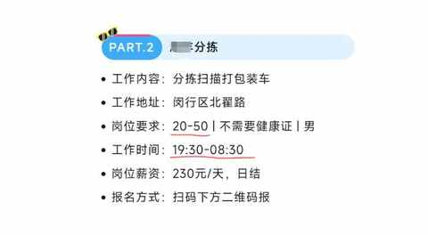
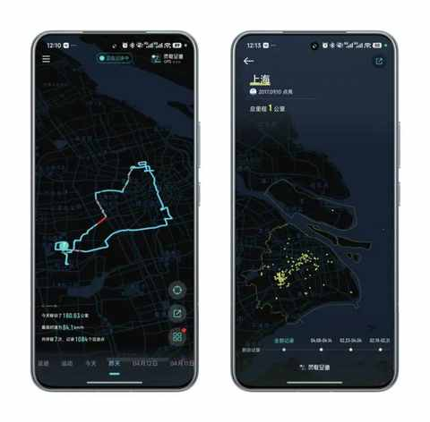

从键盘到方向盘：36岁，我的第一份兼职为什么偏偏选了跑货拉拉？
引子
上一篇文章讲到兼职，主要是跑货拉拉 20 天的经历和感受：
时薪不到30元，56单流水2627：一个中年人兼职开车送货的7个真相
被多人问到同一个问题： 为什么不是跑外卖之类的兼职？
可能是外卖这个话题在网络上很火，日常我们也经常见到外卖小哥在路上奔波，但简单了解后，便把这一兼职形式从清单中去掉了。
虽然跑货拉拉是个人36 年来的首次兼职，但依然有其选择逻辑。
我的兼职选择逻辑
有一说一，兼职的时薪范围大概在 20-30 元，整体偏低但依然有不小的竞争。
一、岗位适配度
简单在微信搜索附近的工作，会出现一系列相关的关键词。

在点进去某些帖子后，我惊喜地发现自己不符合要求：没有健康证、年龄超了、还没有 180……
而有些我的条件都符合，但这个苦大概率吃不了。

二、灵活度高
因为早上 7 点多要送娃上学，下午四点多要接娃放学，所以空余的时间集中在这 8 个小时里面：上午 8 点到下午 4点。
一份灵活度高的兼职工作，能更好地应对突发状况，每天也能按时去接娃的放学。
三、顺应性格特点
一个 i 人和陌生人或不熟悉的人在一个密闭空间，是真的有点尴尬。
没有选择跑顺丰车或兼职跑滴滴，不想和陌生人在封闭空间有过多接触。
四、不宜过多投入
送外卖或闪送，均需要购买对应平台的衣服和头盔。
再涉及到电动车电池的因素，可能还需要把用了五年多的电动车电池给换掉，以便获得更长距离的续航。
主要投入在 3 个地方：
- 充电：家充桩的峰谷电，约 20-30 元/次
- 备箱垫：买了 3 个，总计 140 元
- 洗车：自助洗车，1-2 周洗一次，每次约 10-15 元
五、申请方便
兼职跑货拉拉，必须有这三样：汽车、行驶证、身份证，
再按要求提交资料即可申请成为兼职司机，通过后即可开始接单。
六、不反感工作内容
如果做不喜欢的事情，那整个的过程必然对人是一个很大的消耗。
跑货拉拉有一个显著的益处是：能逐步熟悉整个城市。
日常我们开车去的地方，十分有限，开车送货的路途中能熟悉城市道路，加深对城市的了解和观察。

结语
回过头看，在“为什么是货拉拉”与“为什么不是外卖”之间，有一道清晰的个人逻辑。它关于时间因素、性格特点、成本计算……
因此，这个选择不仅是一份收入来源，更是一种实实在在的生活体验。
重要的不是选了哪条路，而是在选择的逻辑里，看清了自己最真实的处境与需求，并为此承担起全部责任。